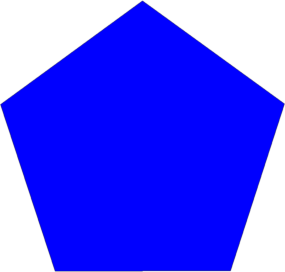
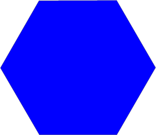
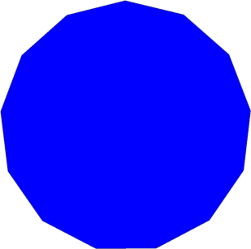
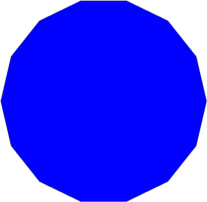

Faber-Krahn inequality for polygons - numerical study
The classical Faber-Krahn inequality states that the ball is the minimizer for the first eigenvalue of the Laplacian with Dirichlet boundary conditions among sets with fixed volume. One may think to study the same problem in the simple case where instead of considering a general shape, we restrict our attention to polygons of fixed area. Despite its apparent simplicity, this question does not have an answer until now. The following conjecture, due to Polya, is the best guess for a reasonable answer.
Let $N \geq 5$ be an integer. The polygon with $N$ sides with fixed area which minimizes its first Dirichlet-Laplace eigenvalue is the regular polygon.
The only solved cases are $N=3,4$ where arguments based on the Steiner symmetrization are used to find the expected answer. The fact that there exists an optimal polygon with $N$ sides is also known, and a proof can be found in A. Henrot, Extremum problems for eigenvalues of elliptic operators. The only tricky part is to see that the limit of a minimizing sequence does not have fewer sides than needed.
Since a theoretical answer is not known for $N \geq 5$, we may perform some numerical computations to see if we can get a counterexample. As you'll see below, this does not happen. We manage to check Polya's conjecture for $N \in [5,15]$, and every time, the numerical minimizer is a regular polygon.
There are two aspects that need to be addressed in order to tackle the problem:
- Provide a numerical method which is precise and fast;
- Write the derivative of $\lambda_1$ with respect to each of the parameters representing the vertices of the polygon.
I choose to work with a method based on fundamental solutions. Given a general shape $P$, whose boundary is well behaved, we wish to solve numerically the equation $$ \begin{cases} -\Delta u = \lambda u & \text{ in }\Omega \\ u = 0 & \text{ on }\partial \Omega \end{cases} $$ The idea behind the method of fundamental solutions is to consider only functions which already satisfy the equation $-\Delta u = \lambda u$ in $\Omega$. One way to do this is to consider \[ u = \alpha_1 \phi_1^\lambda+...+\alpha_N\phi_N^\lambda,\] where $\phi_i^\lambda,\ i=1...M$ are fundamental radial solutions of $-\Delta \phi = \lambda \phi$. We choose these fundamental solutions to be of the form $\phi(x) = H_0(\sqrt{\lambda}|x-y_i|)$, where $H_0$ is the Hankel function of order $0$. We denote by $(y_i)$ the singularities of the functions $\phi_i^\lambda$ which are points outside $\Omega$. The coefficients $\alpha_1,...,\alpha_N$ are found by imposing the boundary conditions on a discretization of $\partial \Omega$ denoted $(x_i)$. This leads to a system of equations $$ \alpha_1 \phi_1^\lambda(x_i) +...+\alpha_N \phi_N^\lambda(x_i) = 0,\ i=1...N. $$ Of course, we are interested in the case where this system has a non-trivial solution, which means that the matrix $A_\lambda=(\phi_j(x_i)^\lambda)_{i,j=1}^N$ needs to be singular. Thus, in order to find the eigenvalues of a domain $\Omega$ which are situated in some interval $I$, it suffices to locate the points $\lambda \in I$ where $\det A_\lambda = 0$. Note that in this form, when $\lambda$ is an eigenvalue, the system does not have a unique solution. In order to address this issue, we add another equation corresponding to an interior point, where we impose that the combination $\sum\alpha_i \phi_i^\lambda$ does not vanish. Methods of this type have been considered in the literature by Alvez and Antunes.
The second aspect is the computation of the derivative with respect to the vertices of the polygon. In general, if a shape $\Omega$ is perturbed by a vector field $V$, the expression of the derivative of a simple eigenvalue is given by $\frac{d\lambda}{d V} = -\int_{\partial \Omega} \left(\frac{\partial u}{\partial n}\right)^2 V.n d\sigma$. We want to compute the derivative with respect to the parameters defining each vertex of the polygon. In order to do this, we consider particular vector fields $V$. This perturbation of one vertex induces a perturbation of the segments $A_{i-1}A_i,A_iA_{i+1}$ of $P$. In this particular case $V$ has the following form on $\partial P$: $$ \begin{cases} \Bbb{I}_{i-1,i}(x) (1,0) & x \in [A_{i-1}A_i] \\ \Bbb{I}_{i+1,i}(x) (1,0) & x \in [A_iA_{i+1}] \\ 0 & \text{ otherwise }, \end{cases}$$ where $\Bbb{I}_{j,l}: A_{j}A_l \to [0,1]$ is an affine function with $\Bbb{I}_{j,l}(A_j) = 0,\ \Bbb{I}_{j,l}(A_l) = 1$. Denoting $n_{j,j+1}=(n_{j,j+1}^2,n_{j,j+1}^2)$ the outer normal of the segment $A_jA_{j+1}$ of $\partial P$, we have $$ \frac{d\lambda_1}{dx_{2i-1}} = -\int_{A_iA_{i-1}}\Bbb{I}_{i-1,i} \left(\frac{\partial u}{\partial n}\right)^2 n_{i-1,i}^1 d\sigma-\int_{A_iA_{i+1}} \Bbb{I}_{i+1,i} \left(\frac{\partial u}{\partial n}\right)^2 n_{i+1,i}^1 d\sigma.$$ In the same way we get $$ \frac{d\lambda_1}{dx_{2i}} = -\int_{A_iA_{i-1}}\Bbb{I}_{i-1,i} \left(\frac{\partial u}{\partial n}\right)^2 n_{i-1,i}^2 d\sigma-\int_{A_iA_{i+1}} \Bbb{I}_{i+1,i} \left(\frac{\partial u}{\partial n}\right)^2 n_{i+1,i}^2 d\sigma.$$ Once we have all these ingredients we can perform the numerical optimization using a standard gradient descent algorithm.
Below are the results I obtained for $N \in [5,15]$. Since for large $N$ it is not really clear if the polygons are regular by just looking at them, I computed the standard deviation of the lengths and the angles of the obtained polygons (they are denoted stdl and stda in the figures below). The fact that these quantities are small means that the polygons are close from being regular.
| $N=5, \lambda_1 = $ | $N=6, \lambda_1 = $ | $N=7, \lambda_1 = $ | $N=8, \lambda_1 = $ | $N=9, \lambda_1 = $ |
 |
 |
|||
stdl $ = 7e-5$ stda $ = 1e-5$ |
stdl $ = 1e-6$ stda $ = 1e-6$ |
stdl $ = 3e-6$ stda $ = 3e-6$ |
stdl $ = 2e-6$ stda $ = 2e-6$ |
stdl $ = 4e-6$ stda $ = 3e-6$ |
| $N=10, \lambda_1 = $ | $N=11, \lambda_1 = $ | $N=12, \lambda_1 = $ | $N=13, \lambda_1 = $ | $N=14, \lambda_1 = $ |
 |
 | |||
|
stdl $ = 3e-3$ stda $ = 3e-3$ |
stdl $ = 3e-5$ stda $ = 3e-5$ |
stdl $ = 3e-5$ stda $ = 3e-5$ |
stdl $ = 2e-5$ stda $ = 2e-5$ |
stdl $ = 1e-5$ stda $ = 1e-5$ |
| $N=15, \lambda_1 = $ | $N=16, \lambda_1 = $ | $N=17, \lambda_1 = $ | $N=18, \lambda_1 = $ | $N=19, \lambda_1 = $ |
| Image unavailable in the legacy archive | Image unavailable in the legacy archive | Image unavailable in the legacy archive | Image unavailable in the legacy archive | |
|
stdl $ = 2e-3$ stda $ = 2e-3$ |
← Back to numerical computations
Created: June 2015